14 PRINCIPLES FOR CULTURAL PEACE
Managing Political Polarization & Protecting Innocent People
01
Self Determination
Allow people to enjoy their own communities. Don't invade others' conversations.
02
Banking Neutrality
No one may be economically outlawed without due process.
03
Immunity from Partiality
Firing on moral grounds requires legal threshold and proven negative intent.
04
Freedom from Assault
No doxxing, harassment, or threats. Everyone has the right to privacy.
05
Freedom from Political Discrimination
End prejudice in employment, education, or housing based on politics.
06
Judicial Reporting Embargo
No media reporting on sensitive cases until verdict. Avoid trial by opinion.
07
Statute of Limitations
Conduct older than 5 years or before age 25 should not be held against people.
08
Freedom from Secret Exclusion
No shadowbanning. People deserve to know if they're being silenced.
09
Transparency of Judgment
Algorithmic decisions affecting reputation must be explainable.
10
Freedom of Consciousness
Technology must not manipulate behavior or perception of reality.
11
Freedom to Enjoy Culture
Cultural appreciation is welcome. Subversion or co-opting is not.
12
Equality of Public Access
Public corporations cannot remove access without good reason.
13
Freedom of Association
Following someone doesn't equal endorsement. No guilt by association.
14
No Monopolies on Truth
No group owns the truth. Lived experience can bias as well as inform.